Your days, kept as photographs.
Moodroll is a mood journal you actually want to reopen. Give the day a colour, shoot it on one of 30 film-style cameras, and watch a month turn into a picture you can read at a glance.
- Three cameras free forever
- No account
- No ads, ever
- Works offline
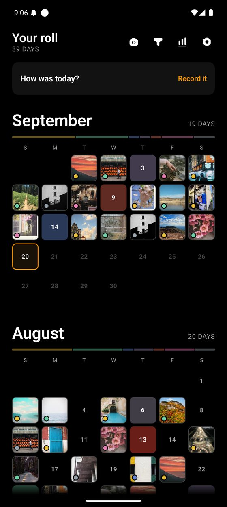
- 30cameras, not filters
- 7mood colours
- 0accounts to make
- 0ads — not now, not later
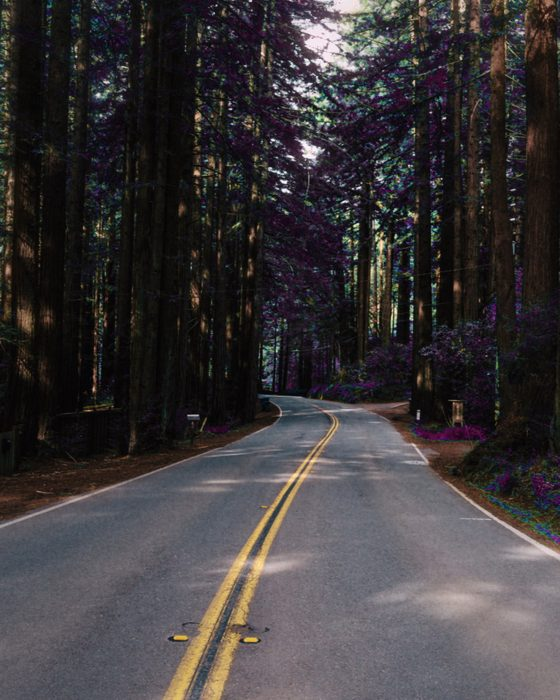
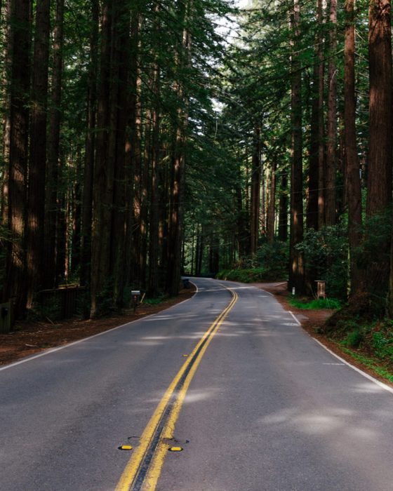
Drag the handle. See the difference.
On the left, the frame as the camera received it. On the right, what that camera hands back. Grain, halation, lens softness and vignette are built per shot — not stamped over a picture that was already finished.
- Rendered at captureThe softness is in the picture, not laid on top of it.
- Develop it again tomorrowEvery photo keeps its negative, so any day can be printed through another camera.
- Nothing here was retouchedEach frame on this page is a packaged sample run through the app's own render chain.
Ten seconds a day.
Most days are a colour and nothing else, and the diary is built for that.
Pick a camera
Swipe the shelf and choose by eye — every camera shows a frame it made before you load it.
Keep the day
One of seven colours and how strongly. A photo, a note or a tag only if you feel like it.
Read it back
Weeks later the timeline is a grid of colour — the shape of a month, readable without a word.
The day is kept before you lock the phone
One of seven colours, and how strongly. A note if you want one, a tag if you want one, and a photograph only if you feel like taking one.
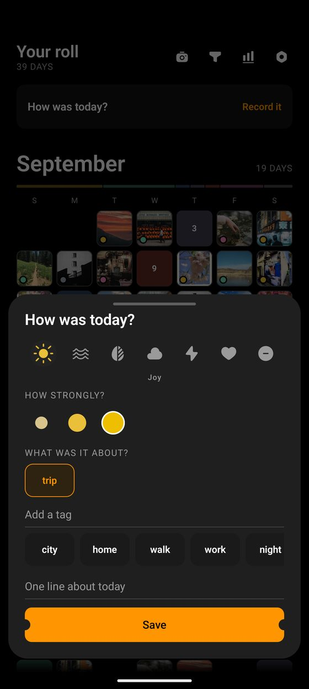
Go back and say more
A day holds its photographs, what it felt like, and anything you want to write down. Nothing is locked once it is saved — add the sentence you could not find at the time, or develop the same frame again on another camera.
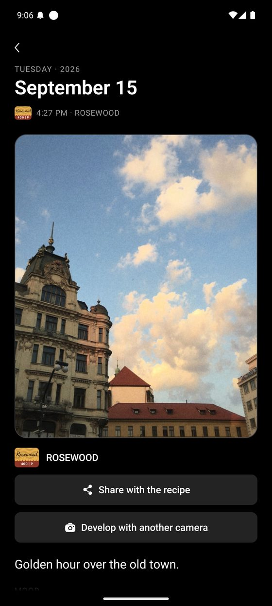
It counts. It never judges.
Insight counts your days back to you and stops there — no score, no trend warning, no advice about your own life. The streak counts days and never counts down: miss one and it is forgiven, twice a month.
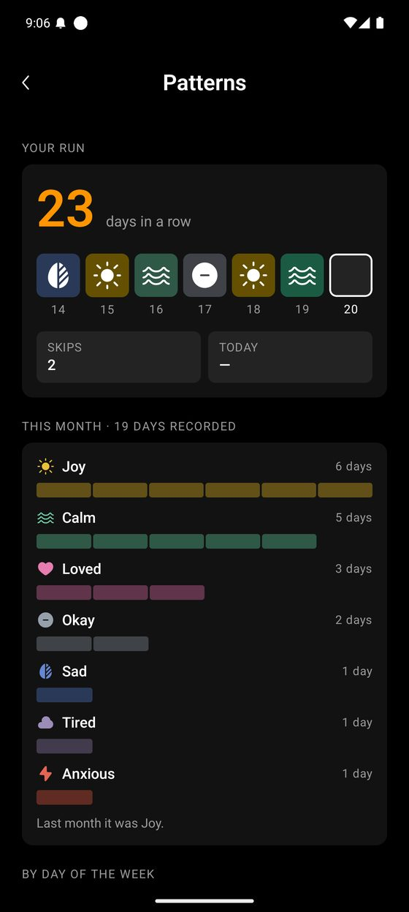
Nothing leaves your phone
No account, no server, no cloud sync — and the diary is excluded from Android's automatic Google Drive backup. There is no usage analytics in the app at all. Crash reports go to Google Firebase so bugs can be fixed; they never carry a photograph, a note, or a mood.
Read the privacy policy — all of it in plain language.
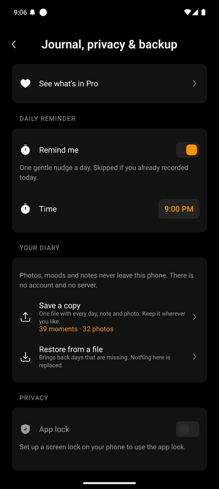
Everything a diary needs.
Nothing it doesn't.
Every one of these is in the free app.
- New
Add a photo you already took
Missed the moment? Bring a photograph in from your gallery and it lands on the day it was taken.
- New
A mood, suggested
Clear smiles in a new photo start the day on Joy. Read on this phone, never sent anywhere, and one tap changes it.
- New
On this day
With the reminder on, a day you kept on this date in an earlier year comes back to you.
- New
Search everything you wrote
Find a day by a word in its note or by one of its tags.
- New
Framing hints
Faces and objects recognised on the phone, and a ring that shows where to put them. Off until you want it.
Your month on the home screen
A free widget paints every day you kept, one square a day. Add it from Settings in one tap.
Double exposure
Two frames on one negative, with seven ways for the two to meet.
Save a copy, anywhere
One file with every day, note and photo. Restoring only adds what is missing — nothing is overwritten.
30 cameras, not 30 filters
Three are free forever at full quality — Honey, Pocket '96, CCD '03 — not weakened versions, but three of the 30. Every photograph below was made by the camera it sits under.
- Honey200A
Honey Free
Warm and nostalgic — made for late afternoon light
- Linen400S
Linen Pro
Soft skin, low contrast, quiet colour
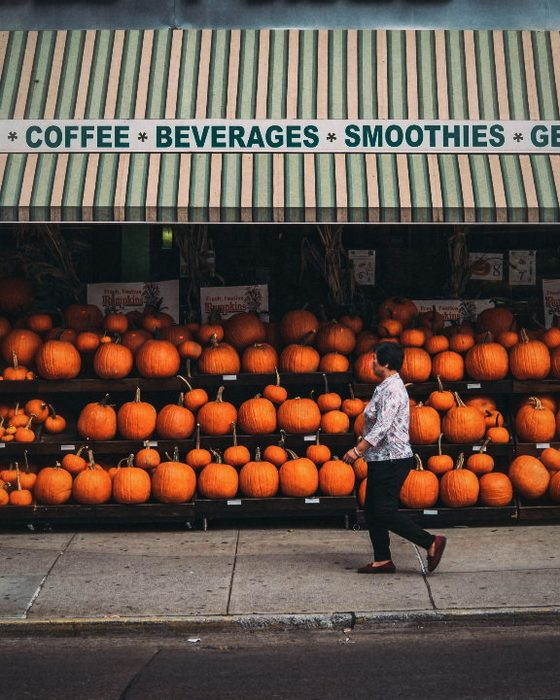
Fern400PFern Pro
Cool greens, everyday snapshots
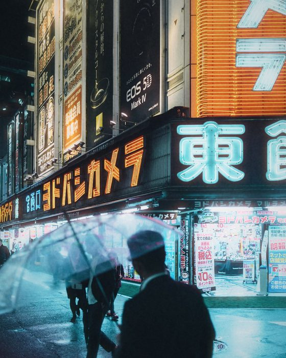
Lantern800WLantern Pro
For warm indoor light — shadows fall teal
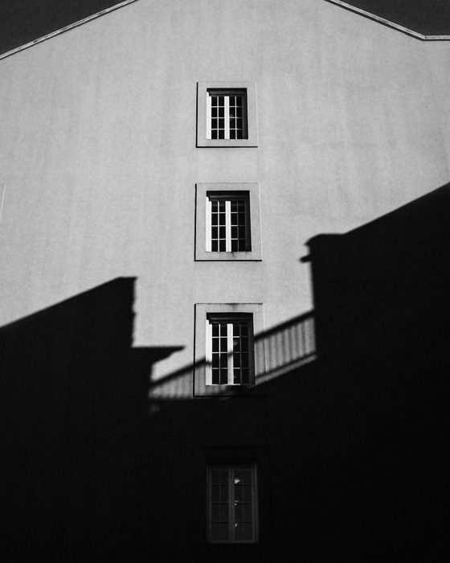
Ash400CAsh Pro
Black and white, coarse grain, hard contrast
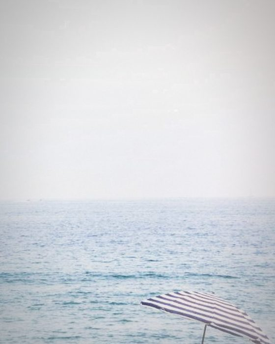
One-Shot400AOne-Shot Pro
Single-use camera — heavy vignette, 27 frames
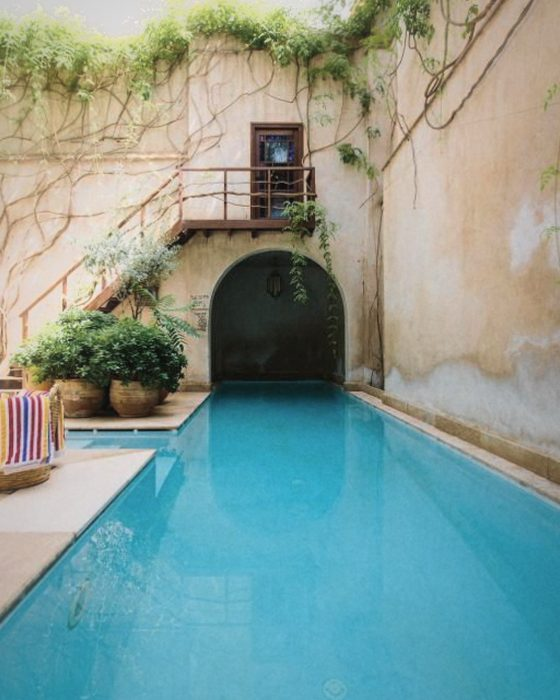
Pocket '96400PPocket '96 Free
90s compact — neutral, slightly cool
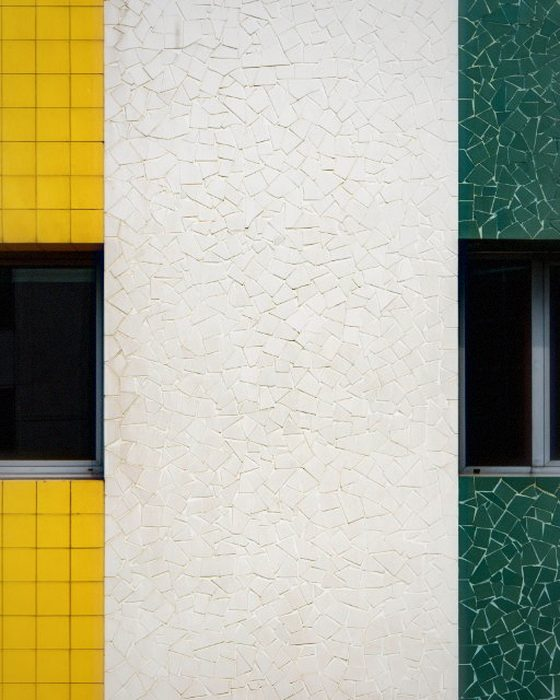
CCD '03100WCCD '03 Free
Early-2000s digicam — punchy, saturated, a little harsh
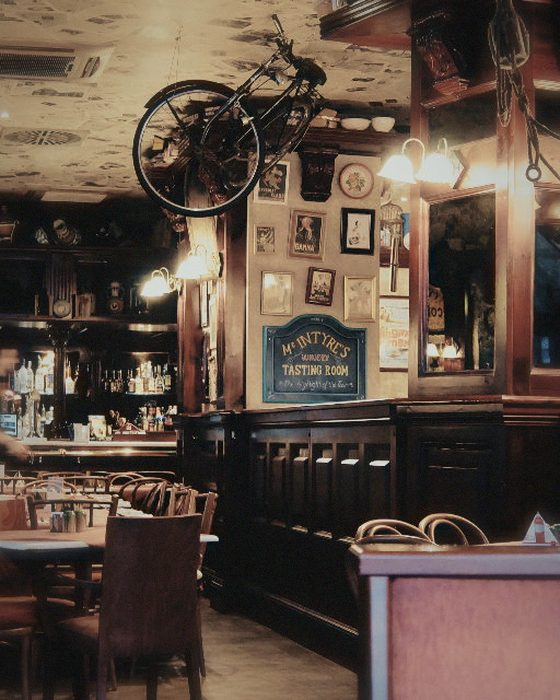
Tape400HTape Pro
Flat, greenish, old video tape
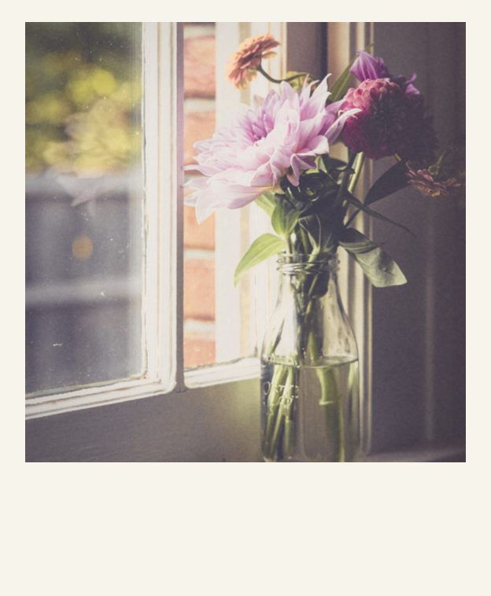
Instant Square800HInstant Square Pro
White border, lifted blacks, instant film
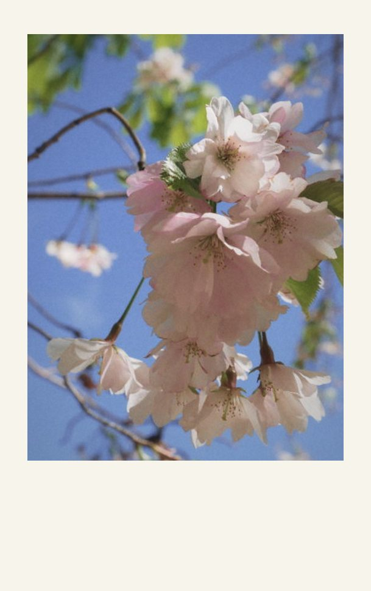
Instant Mini800GInstant Mini Pro
Bright, soft, a hint of pink
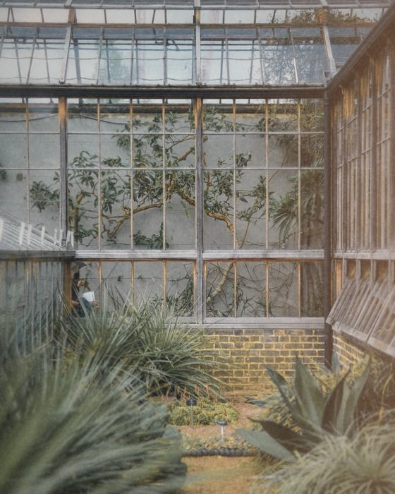
Expired Roll400OExpired Roll Pro
Faded, colour-shifted, light leaks
- Infra Pink400I
Infra Pink Pro
Leaves come back pink — for parks, trees, anything green
- Silver Bleach400C
Silver Bleach Pro
Colour drained, blacks deep — hard light suits it
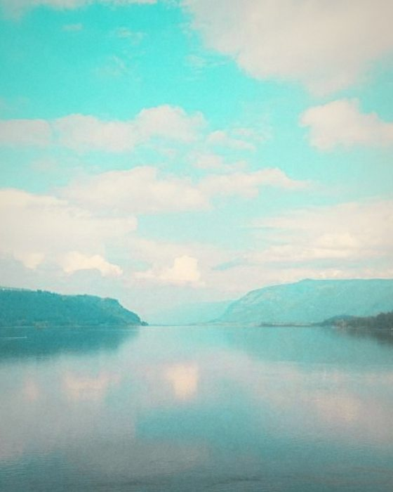
Crossed400ICrossed Pro
Developed in the wrong chemicals — cyan shadows, 36 frames
- Slide 64100M
Slide 64 Pro
Dense colour, deep blacks — give it good light
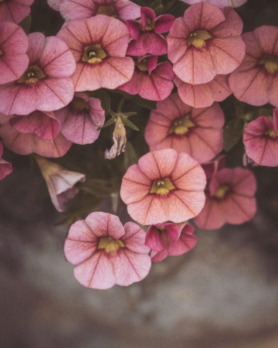
Pale Wash400HPale Wash Pro
Muted and matte — the quiet one
- Larch200P
Larch Pro
Muted colour, blue-green foliage
- Mesa400G
Mesa Pro
Soft desert warmth, turquoise skies
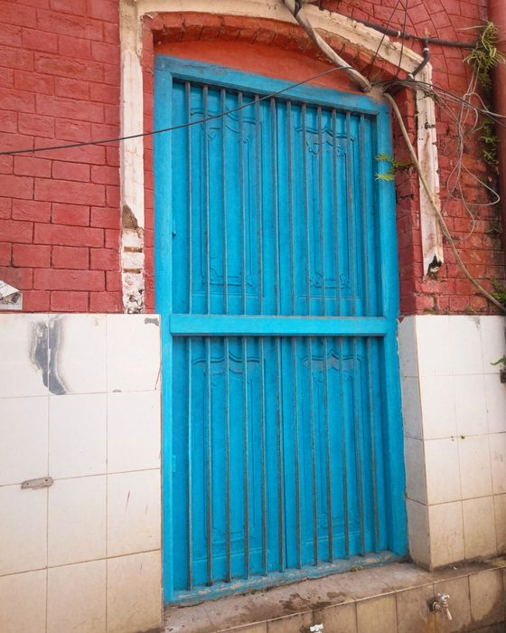
Tidepool200PTidepool Pro
Summer blues and sunlit oranges
- Marquee400I
Marquee Pro
Orange light against teal shadows
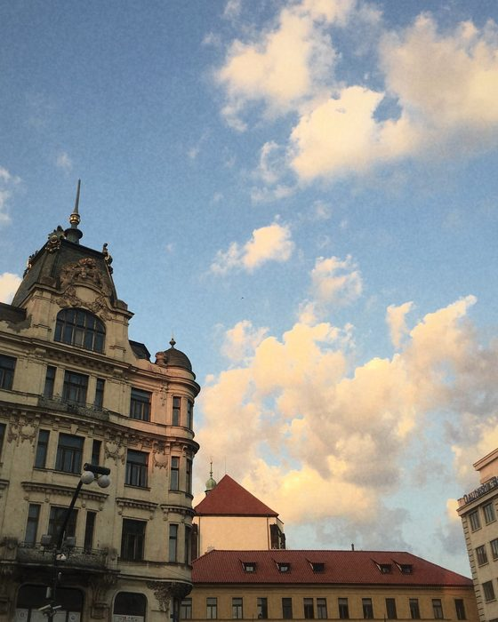
Rosewood400PRosewood Pro
Rose reds for the last light
- Meadow200P
Meadow Pro
Clear greens and open blue skies
- Plum800S
Plum Pro
Dense colour with violet shadows
- Daybreak400M
Daybreak Pro
Soft warm colour, open shadows
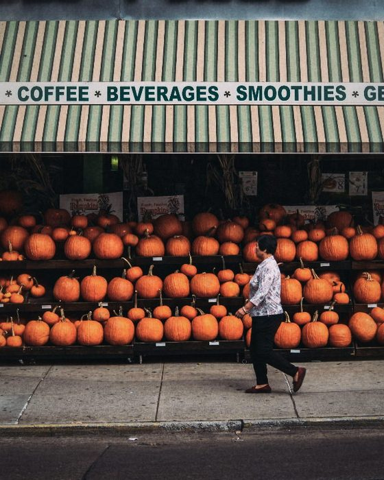
Asphalt200AAsphalt Pro
Crisp colour for city light
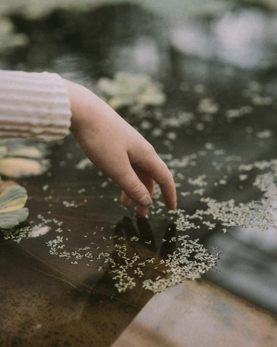
Plain100PPlain Pro
Quiet colour, gentle contrast
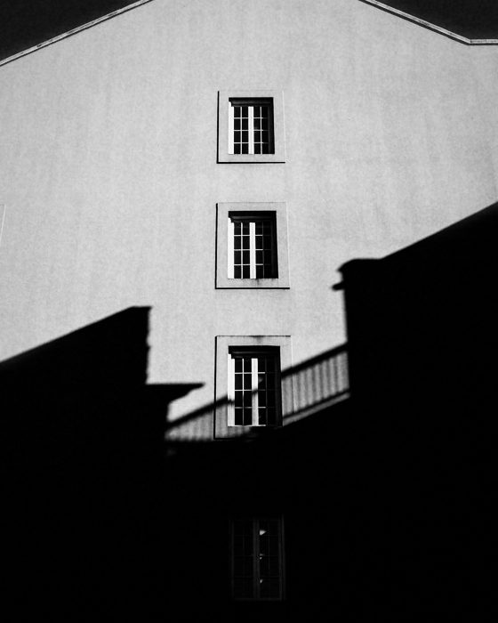
Graphite400CGraphite Pro
Deep blacks, silver highlights
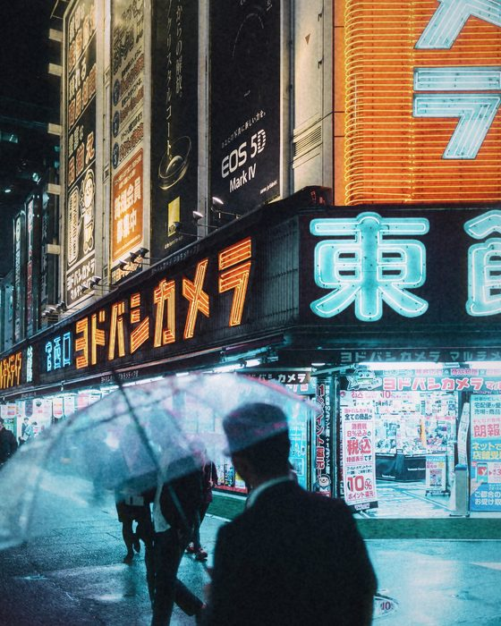
Dusk800WDusk Pro
Violet shadows, warm light
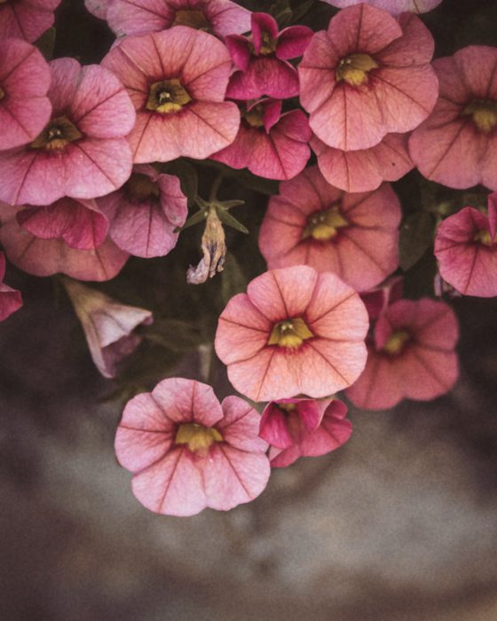
Fjord400PFjord Pro
Quiet colour, soft highlights
30 cameras
A month you can read without a word.
Most mood trackers record a day as an emoji and a line of text, and there is nothing to come back to. Here, every day is a colour and sometimes a photograph — and the empty squares are part of the picture too.
With Pro, the month or the year becomes a recap card, ready to post.
- Joy
- Calm
- Sad
- Tired
- Anxious
- Loved
- Okay
Free to keep. Pro to go further.
The free tier keeps your whole diary — every day you record stays, and stays visible. Nothing is hidden behind the price, and nothing is ever deleted.
Free
The whole diary, for as long as you keep it.
- Three cameras at full quality
- Every day, photo, note and tag — kept forever
- Insight, streaks and the month-grid widget
- Gallery import, search and on-this-day
- Save a copy and restore it on a new phone
- Open any camera a friend sends you
Moodroll Pro
27 more cameras, and the things you build with them.
- All 30 cameras
- Build your own camera: the film, the grain, the lens, the border and the roll length
- Record a day straight from the home-screen widget, in two taps
- A second widget with your latest photograph on the home screen
- A recap card for your month or your year, ready to post
- App lock, with your fingerprint or your screen lock
Pro is a monthly or yearly subscription, or a one-time purchase. Prices, and any free trial you are eligible for, are shown in the app.
Questions, answered.
Is Moodroll free?
Yes. The free app keeps your whole diary forever and includes three full-quality cameras, Insight, the month widget, gallery import, search and backups. Pro unlocks the rest of the 30 cameras and a handful of extras.
Where are my photos and notes stored?
On your phone, and only there. There is no account and no server holding your diary. You can save a copy to a file whenever you like and restore it on another phone.
Does it need an internet connection?
No. The camera and the diary work with no connection at all. A connection is only used for buying Pro through Google Play and for crash reports, which never contain a photo, a note or a mood.
Are these real film cameras?
They are looks built to behave like the real thing: grain, halation, lens softness and vignette rendered per shot. Some even run out — the single-use camera gives you 27 frames before you load a new roll.
What do I need to run it?
Android 7.0 or newer, and a camera.
Will there be ads?
No. Not now, not later.
Start your first roll today.
Free to download. No account. Your diary never leaves your phone.